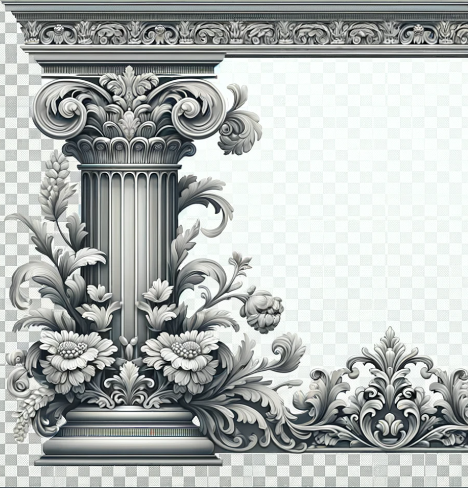
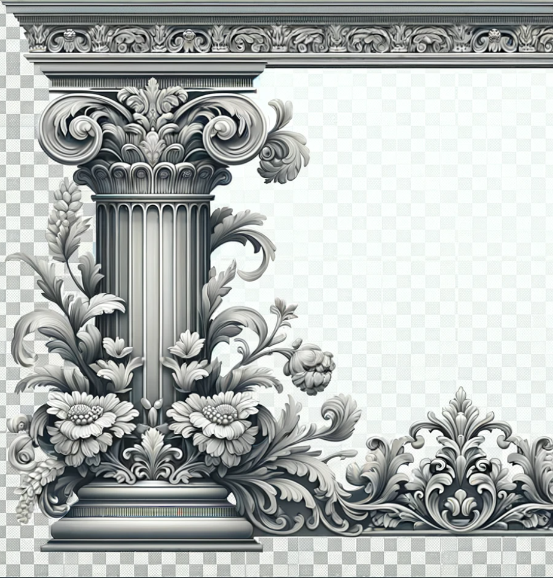

Проекты
Система управления муниципальными финансами
<п>В рамках этого проекта я разработал веб-приложение для управления муниципальными финансами. Основные функции системы включают в себя учет доходов и расходов, автоматизацию отчетности и прогнозирование бюджетных показателей. Использование этой системы позволяет значительно сократить время на обработку данных и повысить точность финансового планирования. Проект был реализован с использованием технологий Python, Django и PostgreSQL.
Сайт для компании по продаже обоев
<п>Этот проект представляет собой корпоративный веб-сайт для компании, занимающейся продажей обоев. Сайт включает в себя каталог продукции с фильтрами для удобного поиска, систему онлайн-заказов и блог с советами по выбору и использованию обоев. Основное внимание было уделено созданию интуитивно понятного интерфейса и обеспечению мобильной адаптивности. Проект был реализован с использованием HTML, CSS, JavaScript и CMS WordPress.
Сайт для текстильной компании
<п>Для текстильной компании я разработал сайт, который представляет её продукцию и услуги. Сайт включает в себя галерею текстильных изделий, раздел с новостями и событиями, а также контактную форму для связи с представителями компании. Важной частью проекта была интеграция системы управления контентом, чтобы сотрудники компании могли легко обновлять информацию на сайте. Проект был реализован с использованием технологий React, Node.js и MongoDB.

 
